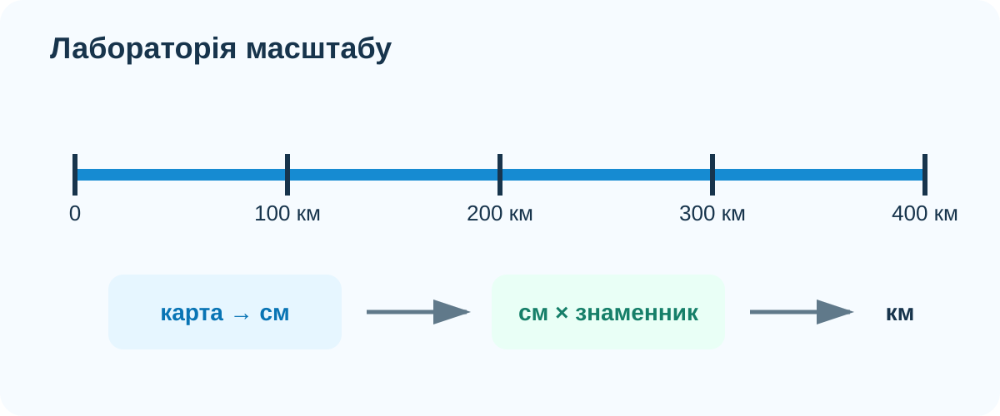

1. Розігрів: що означає 1:5 000 000?
Не шукайте правило в підручнику. Спробуйте пояснити зміст масштабу своїми словами.
2. Інтерактивна лабораторія масштабу

Завдання
Поставте 7,2 см і масштаб 1:2 500 000. Перед натисканням кнопки спрогнозуйте результат. Потім поясніть, де найімовірніше виникне помилка: в множенні, у переведенні сантиметрів у кілометри чи у самому вимірюванні лінійкою.
3. Реальна карта: вимірювання маршруту
На карті нижче — Київ і Черкаси. Оцініть пряму відстань між містами, а потім відкрийте цифрову карту й порівняйте оцінку з фактичним вимірюванням сервісу.
OpenStreetMap. Для вимірювання відстані можна відкрити повну карту й використати інструмент вимірювання або порівняти з геодезичною відстанню.
Чому оцінка може не збігтися?
4. Масштаб і реальність: карта світу

NASA Earth Observatory / Blue Marble topography & bathymetry.
Уявіть, що на такій карті Африка має протяжність з півночі на південь 8,1 см, а масштаб карти 1:100 000 000. Обчисліть приблизну протяжність материка.
5. Відео з КТП
Коротке відео до §7 з КТП.
6. Теорія після діяльності
Числовий масштаб
1:n. Показує, у скільки разів лінійні розміри на карті менші за реальні.
Іменований масштаб
Пояснює масштаб словами: наприклад, «в 1 см — 50 км».
Лінійний масштаб
Графічна шкала, за якою відстань можна зчитати без додаткового перерахунку.
7. Підсумок CER
8. Домашнє завдання
§7. Оберіть дві пари міст України. Для кожної оцініть відстань за картою з відомим масштабом, потім перевірте в OpenStreetMap або іншому картографічному сервісі. Запишіть різницю й коротко поясніть її.